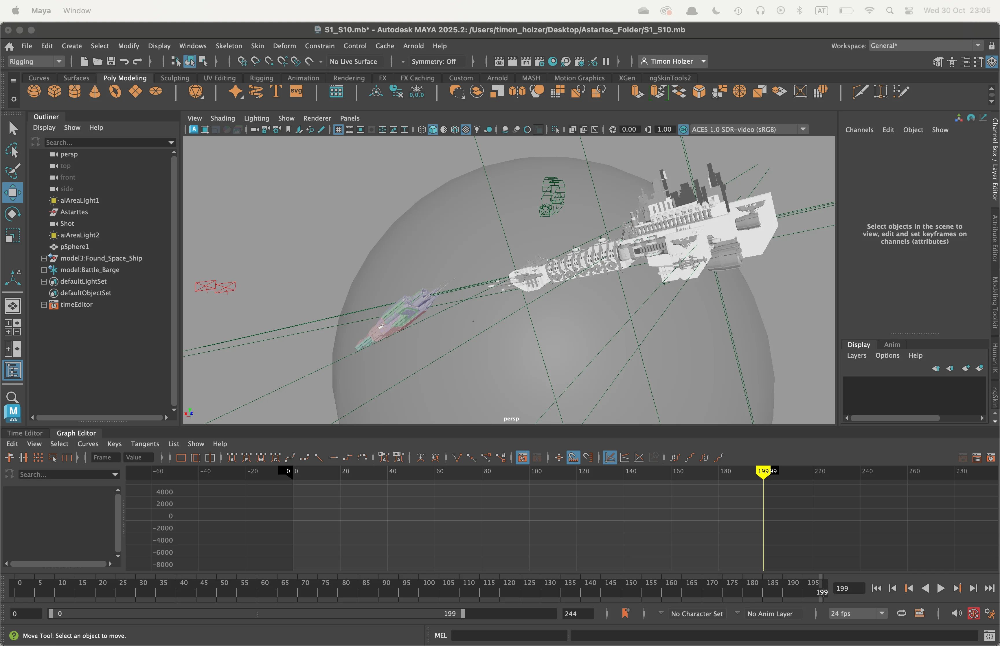
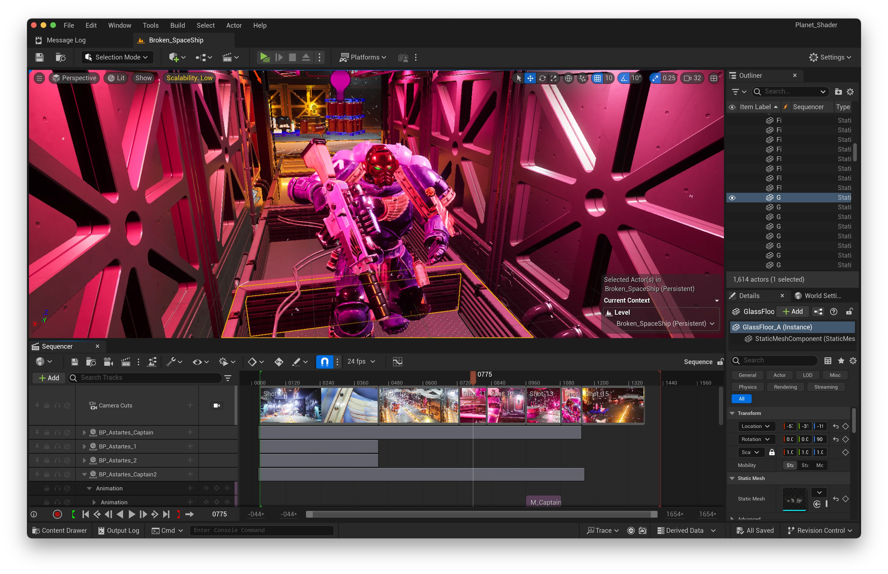

Splitting the Tasks:
James and I have worked on Projects before and we knew what we would be able to cover each others weak areas very well. The roles were split into:
James:
- Lighting
- Rendering
- VFX
- Modelling
- Astartes Space Ship Insides
- Texture Remastering
Timon:
- Previs
- Rigging
- MoCap Clean Up
- Planet Shader & Propellant VFX
- UE Sequence/ Shot Set
- Minor Compositing
Both:
- Story Development & Storyboarding
- Project Management
- MoCap recoding and directing
Previs:
After some very rough Storyboards of me and James we settled on a story. At this point, I started to develop a rough previs for the sequence in Maya. This got more and more refined throughout the process. Find one of the early previs versions below.

Sequence & Shot Set-Ups

Another Task for me was to get the Rig and Animations working in Unreal Engine.
This wasn't a huge deal since I have done this before.
After this it was my duty to set up all the scenes and shots in Unreal.
At this point, the Previs (Below) was immensely helpful and
I was able to focus on the quality of cinematography instead of needing
to figure things out on the go! Once set up it was handed to
James for Lighting and Rendering.
Motion Capturing:
The Motion Caputing was done in the ViPRE Studio at Abertay University. It's a Vicon setup with Infared Markers and 12 tracking cameras. Retarget & Clean up of the animation was done in Maya, and finally exported into Unreal Engine 5.
Animation:
Rigging:The Model was rigged, but didn't meet my expectations for the project. So the rig was completely redone and skinned. This was done in Maya with the help of tools like NG Skintools & Advanced Skeleton. The rig works well in Unreal. All the retargeting was set up and done in Maya
Retarget:
First, the MoCap Data had to be retargeted to the Rig.
This had some challenges, and some of the axes had to be manually
inverted as Vicon as a different Axis orientation as Maya.
The Retargeting was set up in HumanIK (Definition, etc.)
Clean Up
Once all the Animations were applied on the Space Marine Rig,
the Clean Up Process could be started. First, all the Motion Capture
Issues had to be resolved. This includes Missing Keyframes, spikes in data,
and many more. After that, I used a mixture of Constraing and
Multiple Animation Layers to adjust Animations to the different
Body proportions of the Astartes. This mostly concerned the feet sticking
to the floor, and the Astarted handling the Bolter (Gun)